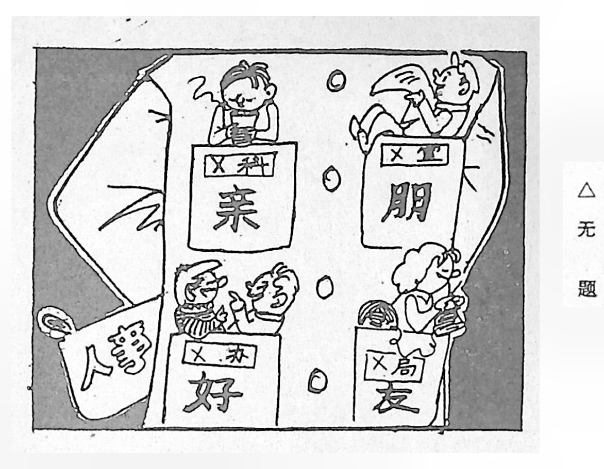

王小根 《人事》1988年第1期（总第28期），封三
无题
Untitled
- Text in the drawing
- 人事 / ×科 亲 / ×室 朋 / ×办 好 / ×局 友
Personnel / X Section: relatives / X Office: friends / X Bureau Office: good / X Bureau: friends - Description
- A personnel file is opened to reveal four offices — a section, an office, a general office and a bureau — whose doors together spell out the set phrase for relatives and friends, each staffed by people lounging and chatting.
- Note
- 亲朋好友, “relatives, friends and good friends,” is a set phrase; split across four office doors it describes a unit staffed by connections.
- Artist
- Wang Xiaogen 王小根
- Published in
- 《人事》1988年第1期（总第28期）, inside back cover
- Themes
- Nepotism · Connections (guanxi)

Cite
Wang Xiaogen, “无题” [Untitled], Renshi (Personnel) 《人事》, 1988, no. 1, inside back cover.